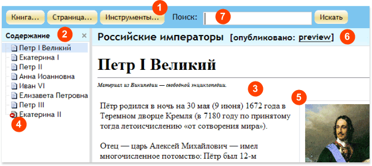

|
WebAsyst Страницы одним взглядом
Так выглядит главное окно сервиса WebAsyst Страницы:

- Панель инструментов: Щелкните по кнопке, чтобы открыть выпадающее меню для доступа к основным функциям:
- Книга: Создание новой книги, изменение свойств книги, настройка прав доступа для других пользователей, публикация книги, создание резервной копии
- Страница: Добавление/редактирование/удаление страницы, перемещение страниц в оглавлении
- Инструменты: Настройка тем публикации
- Содержание: Показывает полный список страниц текущей книги. Щелкните по странице, чтобы открыть ее.
- Страница: Содержание текущей страницы.
- Неопубликованная страница: Значок "въезд запрещен" обозначает страницы помеченные как "неопубликованные". Такие страницы доступны для редактирования, но их не видно в опубликованной версии книги.
- Изображение: Вы можете добавлять изображения и размещать их в нужном месте на странице.
- Preview: Щелкните, чтобы открыть "опубликованную" версию книги в новом окне. Когда вы устанавливаете статус книги "опубликована", вы можете выбрать тему публикации, которая определяет стиль и оформление книги. Опубликованные книги доступны для открытия в браузере как обычные веб-страницы по специальному адресу (URL).
- Поиск: Введите ключевое слово или фразу (например, "петр великий") и нажмите кнопку Искать. В результате поиска вам будет представлен список страниц текущей книги, в заголовках или тексте которых встречается искомое слово.
|
|
|
Создание новой книги
- Щелкните Книга -> Создать книгу в панели инструментов.
- Введите Название. Оно будет выводиться в опубликованной версии книги, и в списке доступных книг в WebAsyst Страницах.
- Введите ID книги - уникальный идентификатор, состоящий из латинских символов и/или цифр.
- Щелкните по закладке Пользователи для настройки персональных прав доступа.
- Щелкните по закладке Группы для настройки прав доступа для групп.
- Нажмите кнопку Сохранить.
|
|
|
Добавление страниц
Чтобы добавить новую страницу в книгу, щелкните Страница -> Добавить. В форме Добавить страницу введите следующие данные:
- Родительский уровень: выберите страницу из списка, которая должна располагаться на более высоком уровне в оглавлении по отношению к новой странице
- Заголовок: под этим заголовком страница будет появляться в оглавлении, а также этот заголовок будет выводиться в браузере при просмотре этой странице
- ID страницы: уникальный идентификатор, который может включать латинские символы, цифры и дефис (“-“)
- Содержание: собственно текст страницы в HTML редакторе
- META-теги: свойства "keywords" и "descriptions" в HTML коде страницы
Пример ниже показывает вид страницы в окне HTML редактора:
Вы можете добавлять изображения в тело страницы. Для этого сначала сохраните страницу, затем нажмите кнопку Добавить изображение справа. Загрузите файл изображения. После того как эскиз этого изображения появится в области справа от HTML редактора, поместите курсор мыши в том месте в тексте страницы, куда вы хотите добавить изображение, затем щелкните по эскизу. |
|
|
Организация и работа со страницами
Вы можете редактировать, копировать, перемещать, удалять, или изменять порядок страниц в оглавлении.
Щелкните Страница... в панели инструментов для доступа к меню действий. |
|
|
Организация оглавления
Щелкните Страница -> Упорядочить, чтобы изменить порядок страниц в книге.
Выберите страницу в списке. Используйте стрелки вверх и вниз для изменения положения страницы в оглавлении.
Нажмите кнопку Копировать или Переместить для копирования или перемещения выбранной страницы на другой родительский уровень.
Для удаления выбранной страницы нажмите кнопку Удалить.
Если вы не хотите, чтобы страница появлялась в опубликованной версии книги, нажмите кнопку Отменить публикацию. Наоборот, если вы хотите сделать видимой ранее скрытую страницу, нажмите кнопу Опубликовать. |
|
|
Установка статуса "опубликована" для страниц
Страницы, отмеченные как "опубликованные" выводятся в списке на панели Содержание со значком страницы. Для страниц со статусом "неопубликована" на этом значке дополнительно выводится знак "кирпич" (въезд запрещен):
Чтобы отметить страницу как "опубликованную", выберите неопубликованную страницу и щелкните Страница -> Опубликовать в панели инструментов.
Чтобы отменить публикацию, выберите опубликованную страницу и щелкните Страница - Отменить публикацию. |
|
|
Копирование/Перемещение/Удаление страниц
Чтобы сделать копию текущей страницы, щелкните Страница -> Копировать в панели инструментов. Копия страницы будет сразу же сохранена и откроется для редактирования.
Для перемещения страницы в другое место в оглавлении, щелкните Страница -> Упорядочить в панели инструментов, выберите страницу, затем используйте стрелки вверх/вниз, или кнопку Переместить.
Удалить текущую страницу можно щелкнув Страница -> Удалить в панели инструментов.
ВНИМАНИЕ: Удаленные страницы нельзя восстановить. |
|
|
Публикация книги
Вы можете опубликовать книгу, и она будет доступна для открытия в браузере по специальному адресу. Щелкните Книга -> Публикация в панели инструментов и выполните следующие настройки:
- Тема. Выберите тему из списка доступных. Тема определяет внешний вид опубликованной книги, место расположения оглавления, шрифты, цвета и т.д. Вы можете создавать и настраивать собственные темы.
- Язык интерфейса. Выберите язык, на котором будут выводиться различные системные сообщения и сообщения об ошибках, при работе пользователя с опубликованной версией книги.
- Адрес. Скопируйте и отправьте этот адрес (URL) тем, кому вы хотите дать доступ к книге.
- Необходима авторизация пользователя. Включите этот флажок, если вы хотите потребовать ввод имени и пароля пользователя при открытии опубликованной книги. Пользователь должен быть предварительно зарегистрирован в секции Пользователи вашего WebAsyst аккаунта.
Прежде чем сохранить настройки публикации, вы можете посмотреть как будет выглядеть опубликованная версия книги. Для этого нажмите кнопку Просмотр, чтобы открыть книгу в новом окне. |
|
|
Использование тем публикации
WebAsyst Страницы содержат несколько готовых тем, которые можно использовать при публикации книги. Каждая тема определяет внешний вид опубликованной книги, место расположения таблицы содержания, стили заголовков и основного текста страниц, размеры шрифтов, цвета и т.д. Вы можете использовать различные темы при публикации разных книг, либо использовать единую тему, например, для публикации различных разделов руководства пользователя для ваших продуктов, выдержанную в вашем фирменном стиле.
Щелкните Инструменты -> Темы для изменения или добавления новых тем. |
|
|
Добавление/Изменение темы
Для создания новой темы или изменения существующей, вам не нужно обладать знаниями языка разметки HTML, или таблиц CSS. WebAsyst Страницы включают в себя инструмент для настройки тем, в котором вам нужно всего лишь установить желаемые значения для ряда элементов. При этом вы сразу же будете видеть, в окне предварительного просмотра, как эти установки влияют на характер отображения страниц.
Щелкните Инструменты -> Темы и выберите тему, которую вы хотите изменить, или нажмите кнопку Добавить тему для создания новой темы. В форме добавления/изменения темы, в левой части, расположен Конструктор. Все элементы форматирования в конструкторе размещены на отдельных закладках. В примере ниже показана закладка "Название книги". На этой закладке вы можете настроить шрифт, который будет использоваться для отображения названия вашей книги, а также цвет фона.
После сохранения всех настроек, ваша новая (или измененная) тема появится в списке доступных для выбора тем в форме настройки публикации книги. |
|
|
Предоставление доступа к книгам другим пользователям
Вы можете работать с книгами совместно с другими пользователями. Для каждой книги в ваших WebAsyst Страницах вы можете предоставить один из следующих уровней доступа отдельным пользователям и/или группам пользователей:
- Чтение (Ч) – пользователь может открывать и читать книгу
- Запись (З) – пользователь может добавлять/редактировать/удалять страницы книги
- Полный (П) – пользователь может делать любые изменения, в том числе публиковать книгу, изменять права доступа к книге и удалять книгу
Для настройки доступа другим, щелкните Книга -> Права доступа. Вы можете настроить права индивидуально для каждого на закладке Пользователи, или использовать закладку Группы для настройки прав для групп пользователей.
При установке прав доступа применяется комбинация персональных и групповых прав, как в примере ниже:
|
Персональные права
|
Групповые права
|
Результирующие права
|
|
-
|
Ч
|
Ч
|
|
Ч
|
ЧЗ
|
ЧЗ
|
|
ЧЗП
|
Ч
|
ЧЗП
|
ПРИМЕЧАНИЕ: Настраивать права может только такой пользователь, который имеет Полный (П) доступа к данной книге, а также доступ к секции Пользователи и Группы.
|
|
|
Резервные копии
Вы можете создать резервную копию книги (backup) в виде ZIP файла, и скачать ее на ваш компьютер. Для этого, щелкните Книга -> Резервная копия в панели инструментов. Щелкните ОК, и после завершения процесса архивации, нажмите кнопку Скачать архив для сохранения созданного ZIP файла на локальном диске.
ПРИМЕЧАНИЕ: Процесс подготовки архива может занять много времени, если ваша книга содержит большое количество изображений.
Для восстановления книги из ранее созданной резервной копии, щелкните Книга -> Восстановить копию в панели инструментов. Выберите ранее созданный ZIP файл копии, укажите ID книги, которая будет создана из архива, и нажмите кнопку Восстановить. |
|